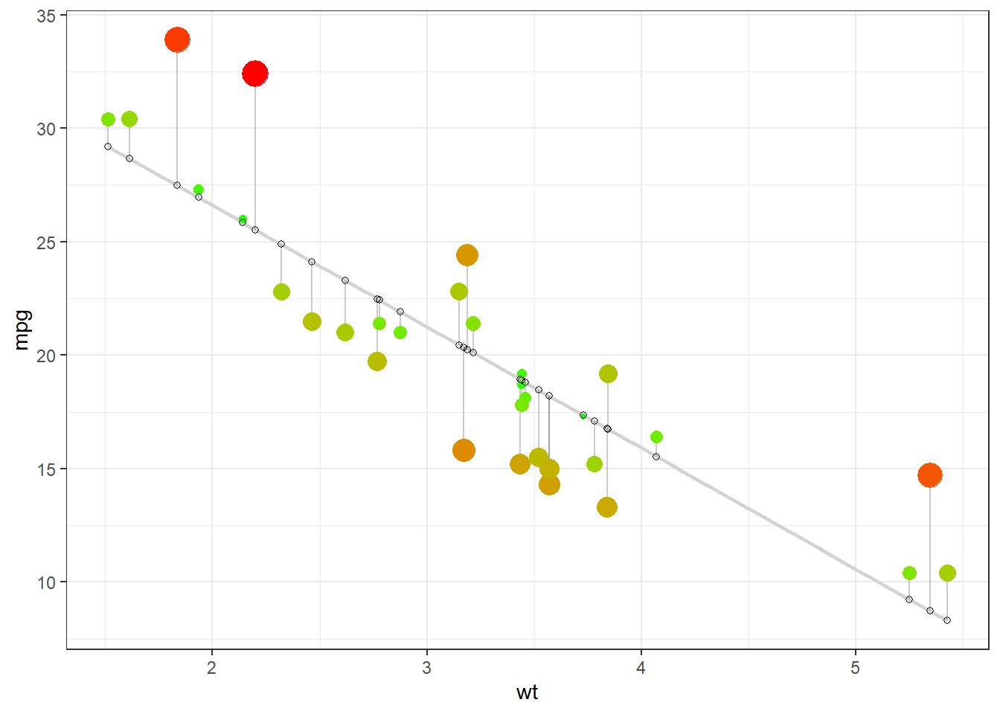
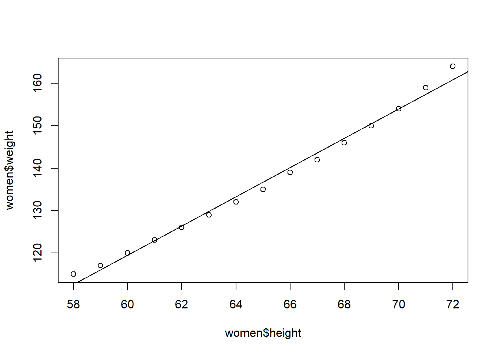
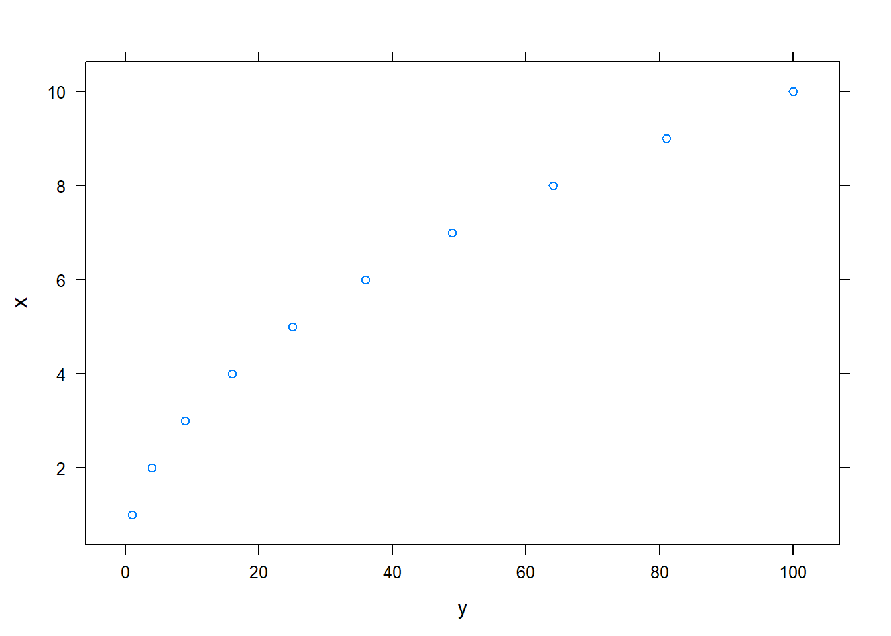
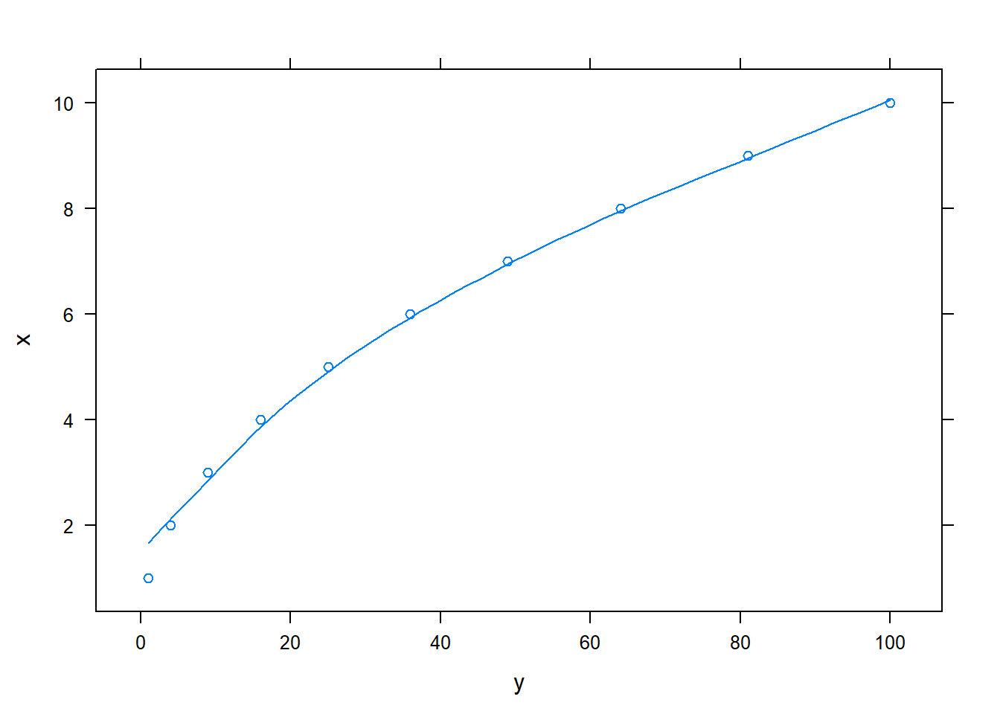

Fitting a line, residuals, and correlation
It’s helpful to think deeply about the line fitting process. In this section, we define the form of a linear model, explore criteria for what makes a good fit, and introduce a new statistic called correlation.
Fitting a line to data
data(mtcars)
head(mtcars)## mpg cyl disp hp drat wt qsec vs am gear carb
## Mazda RX4 21.0 6 160 110 3.90 2.620 16.46 0 1 4 4
## Mazda RX4 Wag 21.0 6 160 110 3.90 2.875 17.02 0 1 4 4
## Datsun 710 22.8 4 108 93 3.85 2.320 18.61 1 1 4 1
## Hornet 4 Drive 21.4 6 258 110 3.08 3.215 19.44 1 0 3 1
## Hornet Sportabout 18.7 8 360 175 3.15 3.440 17.02 0 0 3 2
## Valiant 18.1 6 225 105 2.76 3.460 20.22 1 0 3 1plot(mtcars$wt,mtcars$mpg)
library(ggplot2)
# Basic scatter plot
ggplot(mtcars, aes(x=wt, y=mpg)) + geom_point() ###Fitting the Regression Line and its Residuals
###Fitting the Regression Line and its Residuals
Using the mtcars dataset we can use the lm linear regression function to fit a regression line and then plot it to see the results. The plot shows a good looking regression line.
The plot shows graphically the size of the residual value using a colour code (red is longer line to green - smaller line) and size of point. The size of residual is the length of the vertical line from the point to where it meets the regression line.
## `geom_smooth()` using formula 'y ~ x'
Based on this graph, what mpg would you predict for a car weighing 4.5 (lbs in 1,000’s)?
data("women")
head(women)## height weight
## 1 58 115
## 2 59 117
## 3 60 120
## 4 61 123
## 5 62 126
## 6 63 129plot(women$height,women$weight)
lm1 <- lm(women$weight~women$height)
summary(lm1)##
## Call:
## lm(formula = women$weight ~ women$height)
##
## Residuals:
## Min 1Q Median 3Q Max
## -1.7333 -1.1333 -0.3833 0.7417 3.1167
##
## Coefficients:
## Estimate Std. Error t value Pr(>|t|)
## (Intercept) -87.51667 5.93694 -14.74 1.71e-09 ***
## women$height 3.45000 0.09114 37.85 1.09e-14 ***
## ---
## Signif. codes: 0 '***' 0.001 '**' 0.01 '*' 0.05 '.' 0.1 ' ' 1
##
## Residual standard error: 1.525 on 13 degrees of freedom
## Multiple R-squared: 0.991, Adjusted R-squared: 0.9903
## F-statistic: 1433 on 1 and 13 DF, p-value: 1.091e-14abline(lm1)
shows two variables whose relationship can be modeled nearly perfectly with a straight line. The equation for the line is \(y = -87.51667 + 3.45000 x\). Consider what a perfect linear relationship means: we know the exact value of \(y\) just by knowing the value of \(x\). Perfect fit is unrealistic in almost any natural process. For example, if we took family income (\(x\)), this value would provide some useful information about how much financial support a college may offer a prospective student (\(y\)). However, the prediction would be far from perfect, since other factors play a role in financial support beyond a family’s finances.
Linear regression is the statistical method for fitting a line to data where the relationship between two variables, \(x\) and \(y\), can be modeled by a straight line with some error:
\[ y = \beta_0 + \beta_1x + \varepsilon\]
The values \(\beta_0\) and \(\beta_1\) represent the model’s parameters (\(\beta\) is the Greek letter beta), and the error is represented by \(\varepsilon\) (the Greek letter epsilon). The parameters are estimated using data, and we write their point estimates as \(b_0\) and \(b_1\). When we use \(x\) to predict \(y\), we usually call \(x\) the explanatory or predictor variable, and we call \(y\) the response; we also often drop the \(\epsilon\) term when writing down the model since our main focus is often on the prediction of the average outcome.
It is rare for all of the data to fall perfectly on a straight line. Instead, it’s more common for data to appear as a cloud of points, such as those examples shown in Figure ??. In each case, the data fall around a straight line, even if none of the observations fall exactly on the line. The first plot shows a relatively strong downward linear trend, where the remaining variability in the data around the line is minor relative to the strength of the relationship between \(x\) and \(y\). The second plot shows an upward trend that, while evident, is not as strong as the first. The last plot shows a very weak downward trend in the data, so slight we can hardly notice it. In each of these examples, we will have some uncertainty regarding our estimates of the model parameters, \(\beta_0\) and \(\beta_1\). For instance, we might wonder, should we move the line up or down a little, or should we tilt it more or less? As we move forward in this chapter, we will learn about criteria for line-fitting, and we will also learn about the uncertainty associated with estimates of model parameters.
There are also cases where fitting a straight line to the data, even if there is a clear relationship between the variables, is not helpful. One such case is shown in Figure ?? where there is a very clear relationship between the variables even though the trend is not linear.
library(lattice)
par(mfrow=c(2,1))
vals<-data.frame(x=1:10,y=(1:10)^2)
xyplot(x~y,data=vals)
vals<-data.frame(x=1:10,y=(1:10)^2)
xyplot(x~y,data=vals,type=c("p","smooth"))
We discuss nonlinear trends briefly here but details of fitting nonlinear models are saved for a later course.
Now (?) might be a great time for us to check out this website: http://guessthecorrelation.com/Your homework due before class tomorrow is to watch these videos which are posted under the linear regression header on Brightspace and then do the following homework: Videos to watch: 1. Linear regression women 2. Best fit line women
Once you have watched these videos, and you can refer to them as often as you would like, please answer and do the following:
- Use linear regression to predict the weight of a woman who is 100 inches tall.
- Use linear regression to predict the height of the woman who weighs 200 pounds.
- Use linear regression to predict the height of a woman who weighs 5 pounds.
- Use linear regression to predict the weight of a woman who is 200 inches tall.
- Plot weight on the X axes and height on the y-axes and create a best fit line on your plot.
- Plot height on the y-axes and wait on the X axes and create a best fit line on your plot.
- Add a another column to the women dataframe called GPA which is these 15 numbers: 1.5,4,2,3.7,4,1, 3, 2.5, 3.8, 0.8, 2, 4, 1, 3, 2.
- Use GPA to predict height. Is GPA a significant predictor and how do you know? Draw a best fit line on this relationship.
- Use GPA to predict a weight. Is GPA a significant predictor and how do you know? Draw a bested line on this relationship, too.
- Predict the height of a person with a GPA of 4.0.